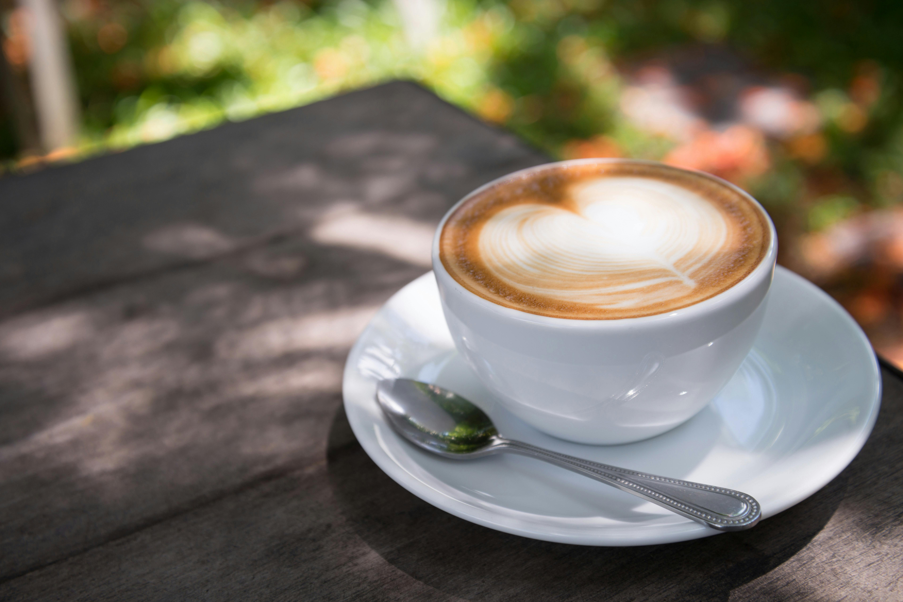
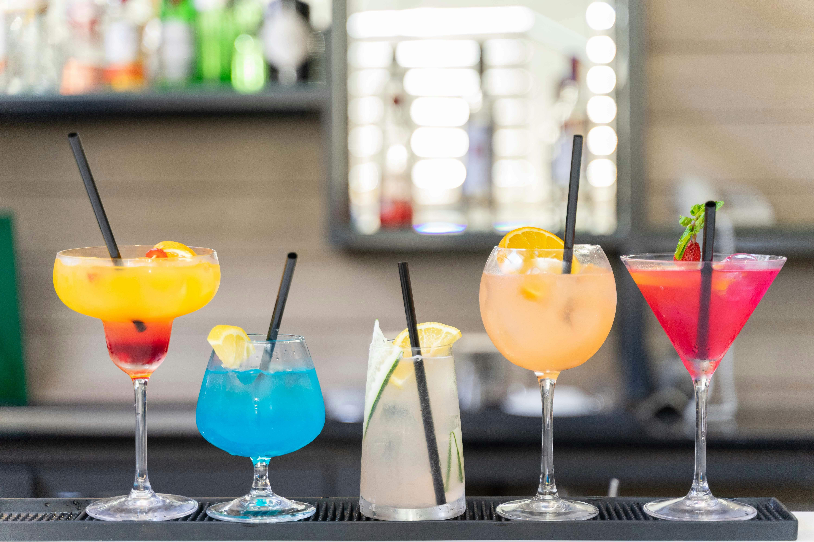
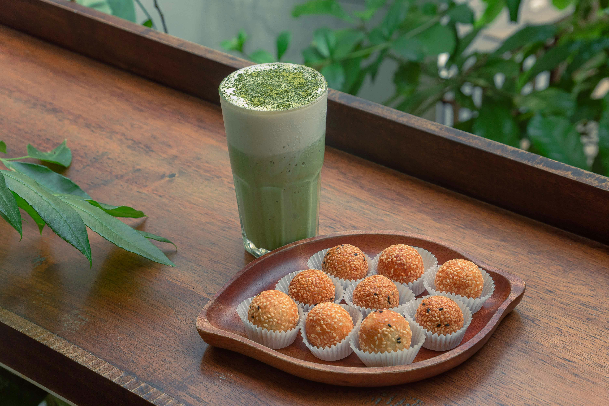
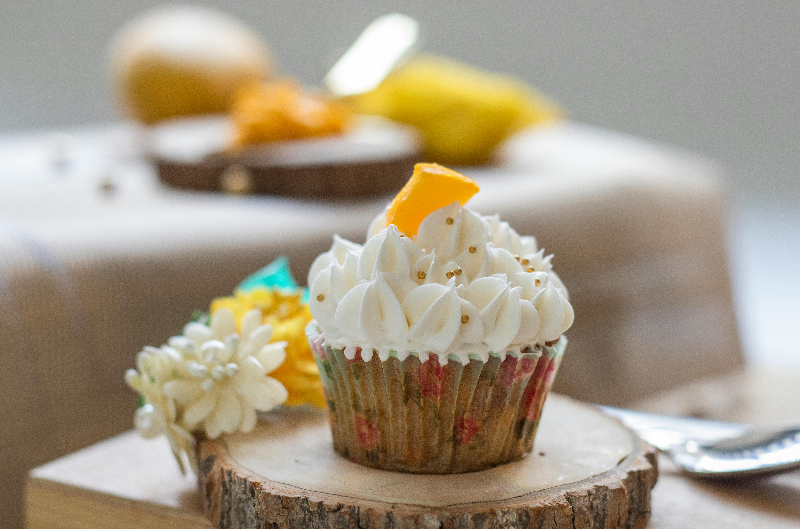

Info
Intan’s Brew Story lahir dari mimpi seorang pengusaha muda bernama Intan, yang percaya bahwa setiap cangkir kopi memiliki cerita tersendiri. Berawal dari kegemarannya menikmati aroma kopi di pagi hari, Intan mulai meracik berbagai jenis kopi dengan caranya sendiri — sederhana, namun penuh makna.
Dengan tekad dan semangat anak muda, Intan membangun Intan’s Brew Story bukan hanya sebagai tempat menikmati kopi, tetapi juga sebagai ruang bagi setiap orang untuk berbagi cerita, melepas penat, dan menemukan inspirasi.
Setiap biji kopi yang digunakan dipilih dengan hati-hati dari petani lokal, dan setiap seduhan diracik dengan cinta. Dari meja kecil di sudut rumah hingga berdirinya kedai pertamanya, Intan terus menulis kisahnya — kisah tentang keberanian untuk memulai, tentang aroma perjuangan, dan tentang hangatnya setiap tegukan yang menyatukan banyak hati.
Selamat datang di Intan’s Brew Story — tempat di mana kopi bukan sekadar minuman, tapi perjalanan penuh cerita.
Coffe

Di Intan’s Brew Story, setiap cangkir kopi adalah hasil perpaduan biji pilihan dan dedikasi dalam setiap seduhan. Dari espresso yang kuat hingga latte yang lembut, kami menghadirkan rasa dan aroma terbaik untuk menemani setiap cerita Anda. Temukan kenikmatan kopi yang diseduh dengan hati, hanya di Intan’s Brew Story.
cocktail

Intan’s Brew Story menghadirkan koleksi cocktail yang diracik dengan keseimbangan sempurna antara rasa dan keindahan. Dari sentuhan manis buah tropis hingga cita rasa klasik yang memikat, setiap gelas kami adalah perpaduan seni dan kehangatan suasana. Nikmati momen terbaik Anda dengan racikan istimewa yang hanya ada di Intan’s Brew Story.
Cake

Di Intan’s Brew Story, setiap potongan cake dibuat dengan cinta dan sentuhan manis yang sempurna. Dari tekstur lembut hingga rasa yang memanjakan lidah, setiap cake kami dirancang untuk melengkapi aroma dan kenikmatan kopi Anda.
Matcha Latte

Perpaduan lembut antara bubuk matcha pilihan dan susu hangat yang menciptakan rasa manis alami dengan aroma khas teh hijau. Setiap tegukan Matcha Latte di Intan’s Brew Story menghadirkan ketenangan dan keseimbangan
CupCakes

Cupcake istimewa dari Intan’s Brew Story dibuat dengan bahan berkualitas dan topping lembut yang manis di setiap gigitannya. Hadir dalam berbagai rasa yang menggoda, cupcakes kami adalah pelengkap sempurna untuk secangkir kopi atau teh kesukaanmu.